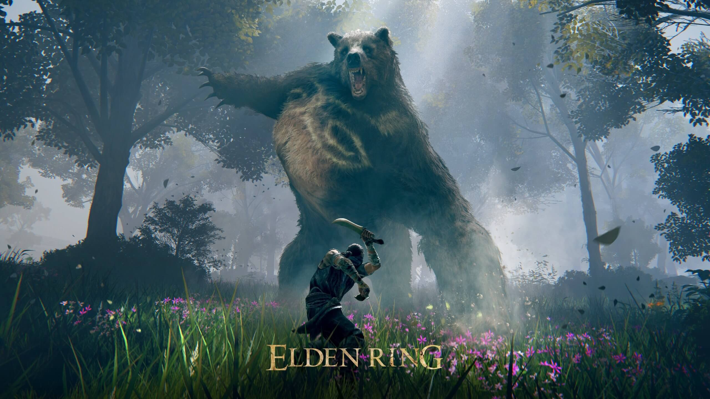

Price: $49.93
Release Date: 02/25/2022
Age Rating: M
Elden Ring is an action role-playing game played
in a third-person perspective, with gameplay focusing on combat and
exploration. It features elements similar to those found in other games
developed by FromSoftware, such as the Dark Souls series, Bloodborne,
and Sekiro: Shadows Die Twice. Set in an open world, players can freely
explore the Lands Between and its six main areas; these locations range
from Limgrave, a site featuring grassy plains and ancient ruins, to
Caelid, a wasteland home to undead monsters. Open world areas are
explorable using the character's mount, Torrent, as the primary mode of
transportation and the ability to fast travel outside combat. Players
encounter non-player characters (NPCs) and enemies throughout the game,
including the demigods who rule each main area and serve as the game's
main bosses. Aside from open-world areas, Elden Ring also features
hidden dungeons, such as catacombs, tunnels, and caves where players can
fight bosses and gather valuable items.
The player chooses a character class at the
start of the game, which determines their starting spells, equipment,
and attributes. Combat with enemies can be within melee range or from
a distance using ranged weapons or spells. Attacks from enemies can be
blocked using shields or avoided by dodging. Spells in Elden Ring
allow players to enhance their weapons, fight enemies from afar, and
restore lost hit points. The player can memorize a limited amount of
spells, which can be cast using a staff or Sacred Seal item. Weapons
in Elden Ring can be improved using Ashes of War, available items that
grant weapons new capabilities. Ashes of War can be applied to or
removed from weapons, and each Ash adds a Weapon Art, a special
ability that can be used during combat. Aside from direct combat,
stealth mechanics can be used to avoid enemies entirely or allow for
the targeting of foes with critical hits while hidden.